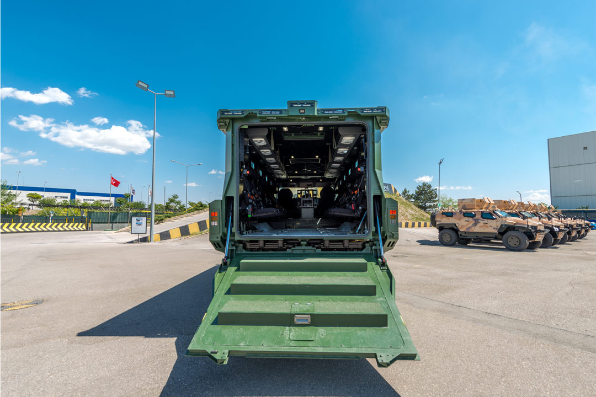
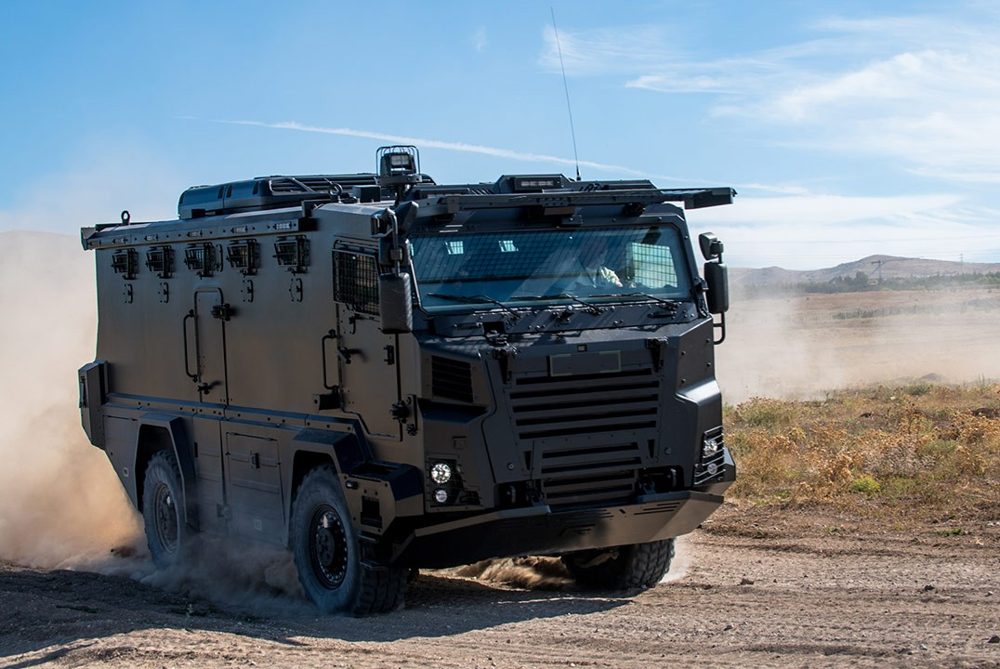
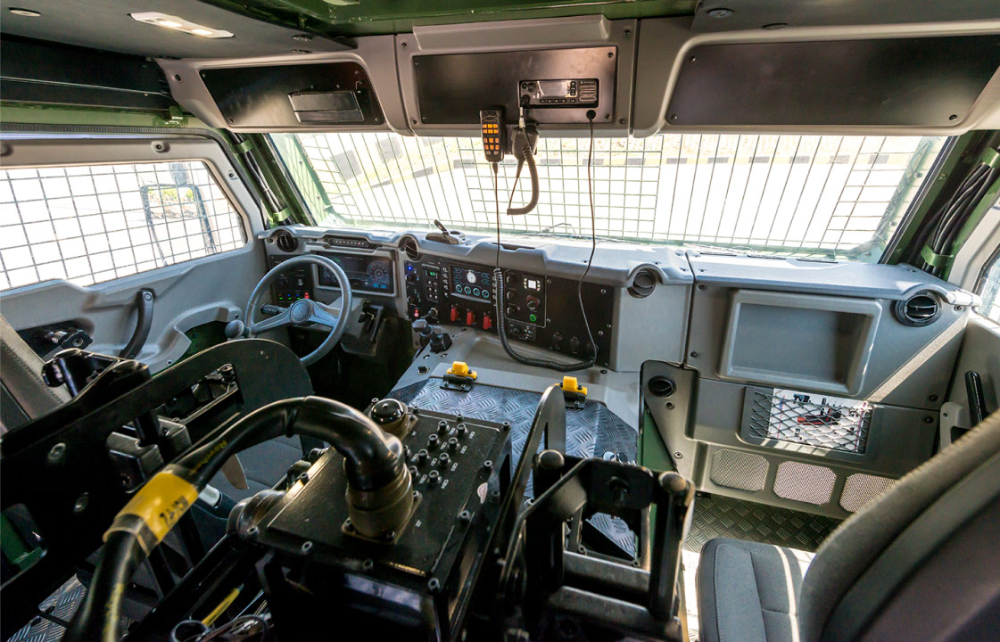

❮
❯
Nurol Makina tarafından geliştirilen özel amaçlı platform ve lojistik destek aracı.
EJDER KUNTER 4x4, Nurol Makina tarafından özgün olarak tasarlanmış özel amaçlı bir platformdur. Araç; askeri, iç güvenlik ve sivil kullanımlar için farklı konfigürasyonlara uyarlanabilecek şekilde geliştirilmiştir.
Platform, 4x4 çekiş düzeni ve tam bağımsız süspansiyon sistemi sayesinde hem şehir içinde hem de kırsal alanlarda, farklı arazi koşullarında etkin görev yapabilecek bir hareket kabiliyeti sunar.
Sistem tasarımı kullanıcı gereksinimlerine göre yapılandırılabilmekte; ateş destek modülü, özel görev ekipmanları ve farklı platform çözümleri entegre edilebilmektedir.



| Platform Sınıfı | Özel Amaçlı Platform / Lojistik Destek Aracı |
| Üretici | Nurol Makina |
| Şasi Yapısı | Özgün / yerli şasi |
| Tahrik Düzeni | 4x4 |
| Süspansiyon | Tam bağımsız süspansiyon sistemi |
| Kullanım Alanı | Askeri, iç güvenlik ve sivil kullanım |
| Görev Profili | Lojistik destek, özel görev ekipmanı taşıma, modüler platform görevi |
| Konfigürasyon Yeteneği | Kullanıcı ihtiyacına göre yapılandırılabilir sistem tasarımı |
| Özel Görev Ekipmanı | Ateş destek modülü ve özel platform çözümleri entegre edilebilir |
| Kabin Koruması | Yüksek balistik korumalı kabin |
| Personel Kapasitesi | 14 personele kadar |
| Sürücü ve Operatör Alanı | Ayarlanabilir ergonomik sürücü ve operatör koltuğu |
| Direksiyon Sistemi | Hidrolik güç destekli direksiyon |
| Diferansiyel | Kilitlenebilir enlemesine ve boylamasına diferansiyel kilitleri |
| Lastik Yapısı | Geniş tabanlı, büyük çaplı lastikler |
| Fren Sistemi | ABS destekli fren sistemi |
| Yaklaşma / Uzaklaşma Açıları | Yüksek yaklaşma ve uzaklaşma açıları |
| Su Geçişi | 0,9 m |
| Dik Engel Aşma | 0,5 m |
| Yan Eğim | %30 |
| Tırmanma Kabiliyeti | %30 |
| Hendek Geçişi | 0,9 m |
| Çalışma Sıcaklığı | -32°C ile +55°C |
| Arazi Kabiliyeti | Kentsel ve kırsal alanlarda, her türlü arazi koşulunda etkin görev |
| Bakım Yaklaşımı | Görev ihtiyaçlarına göre uyarlanabilir platform mantığı |
| Platform Rolü | Özel görev ekipmanları için taşıyıcı altyapı |
| Öne Çıkan Özellik | 4x4 hareket kabiliyeti, bağımsız süspansiyon ve modüler görev uyarlaması bir arada |